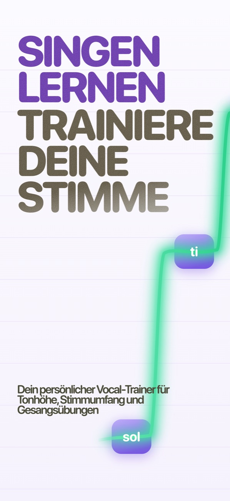
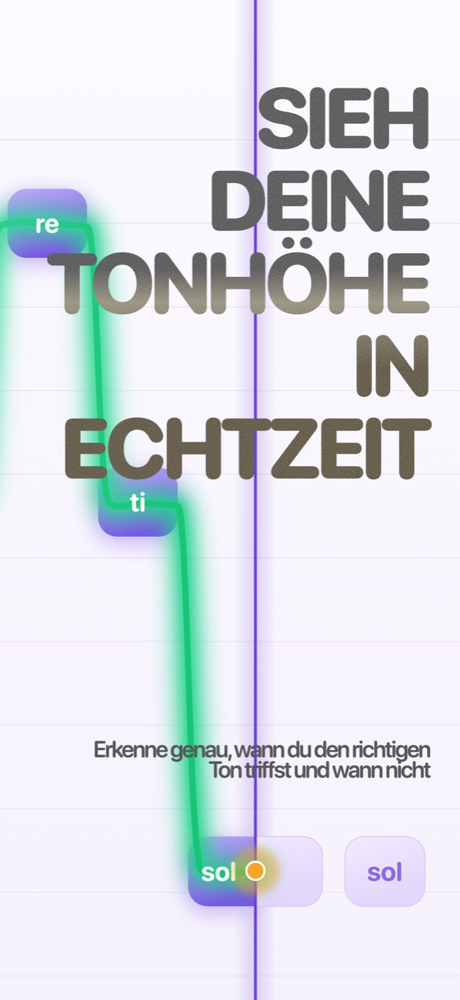
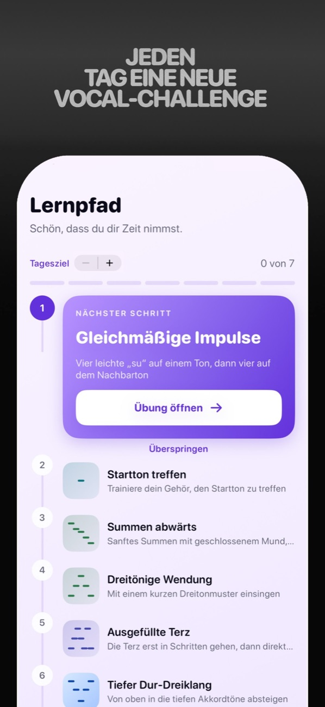
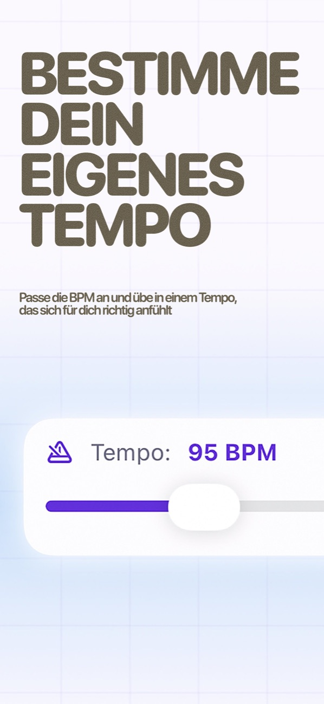

Fokus-Übung
Canu greift die Stelle heraus, an der du hängst, gibt dir Einstiegstöne dazu und lässt dich danach die ganze Übung noch einmal singen.
Canu ist dein persönlicher Gesangscoach. Lerne, Töne sicher zu treffen, entwickle deine Stimme und singe mit mehr Selbstvertrauen. Schritt für Schritt.
Canu greift die Stelle heraus, an der du hängst, gibt dir Einstiegstöne dazu und lässt dich danach die ganze Übung noch einmal singen.
Sieh, welchen Ton du singst und wie sicher du ihn triffst.
Miss deinen Tonumfang live und entdecke deinen Stimmtyp.
Starte mit zwei Übungen zum Einsingen und baue mit wechselnden Übungen eine feste Routine auf.
Sieh nach jeder Übung, was besser wurde und welche Stelle als Nächstes dran ist.
Stelle Tonleitern und Tonfolgen zusammen, wähle Töne und Tempo und speichere sie. Canu Boogie ist als fertiges Beispiel zum Anpassen dabei.
Deine Übungswoche auf einer Notenzeile, mit Übungsminuten pro Tag.
Intonation, Gehörbildung, Agilität, Artikulation, Atemführung und mehr.
Ändere die BPM, um eine schwierige Übung zu verlangsamen oder das Tempo schrittweise zu steigern.
Wähle die Darstellung, die zu dir passt, oder lass sie automatisch wechseln.




Deine Stimme entwickelt sich durch Übung.
Beschreibe kurz dein Anliegen. Wir melden uns so schnell wie möglich und verwenden deine Angaben ausschließlich zur Bearbeitung deiner Anfrage.
Damit wir helfen können: Nenne bitte Gerät, iOS-Version, App-Version und eine kurze Fehlerbeschreibung. Ein Screenshot ist oft hilfreich.
Canu braucht Zugriff auf das Mikrofon. Erlaube ihn in den iPhone-Einstellungen unter Canu. Übe in einem ruhigen Raum und halte das Mikrofon frei.
Canu nimmt nur auf, wenn du die Aufnahme einschaltest. Aufnahmen bleiben auf deinem Gerät, und du kannst sie in der App löschen. Anhören, Vergleichen, Speichern und Teilen gehören zu Canu Pro.
Käufe laufen über deine Apple-ID. Tippe in Canu auf dem Pro-Bildschirm auf „Abonnement wiederherstellen“. Verwalten und kündigen kannst du das Abo in den Einstellungen deiner Apple-ID.
Nur mit deiner Zustimmung: Nutzungsdaten gehen an Google Analytics, Fehlerberichte an Firebase Crashlytics. Beides schaltest du getrennt in den Einstellungen von Canu aus, mit „Nutzungsdaten teilen“ und „Fehlerberichte teilen“. Audio wird nicht übertragen.
Wähle die Region, in der du Canu nutzt.